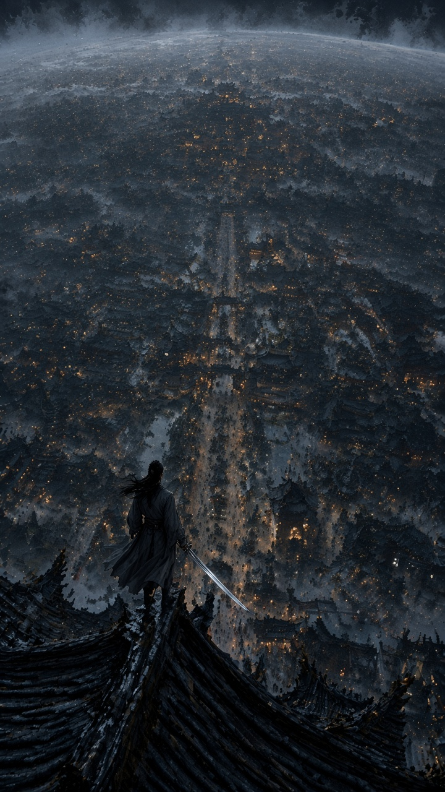
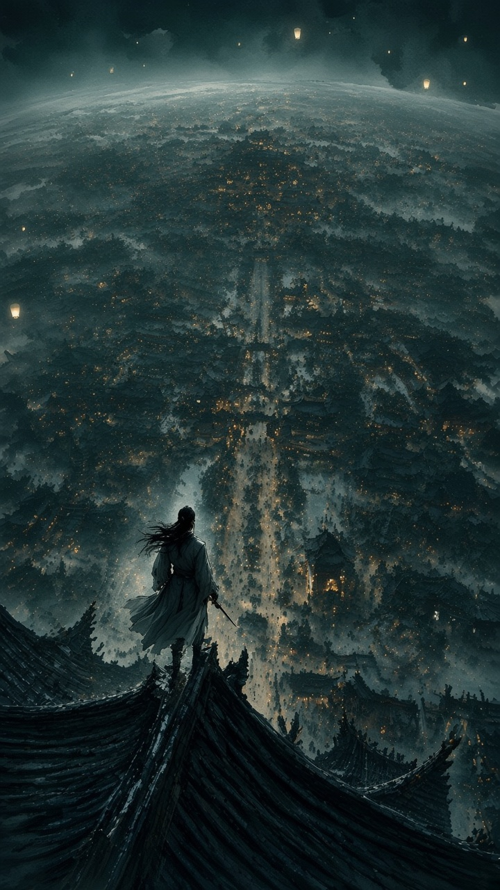
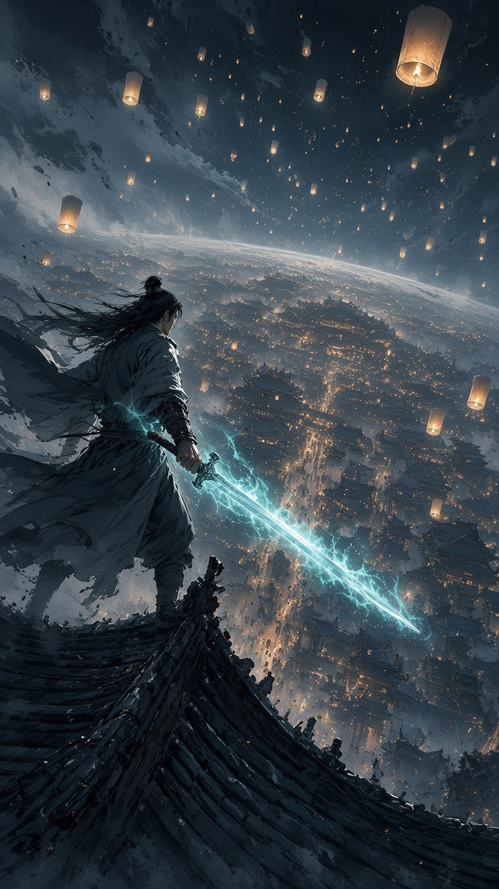
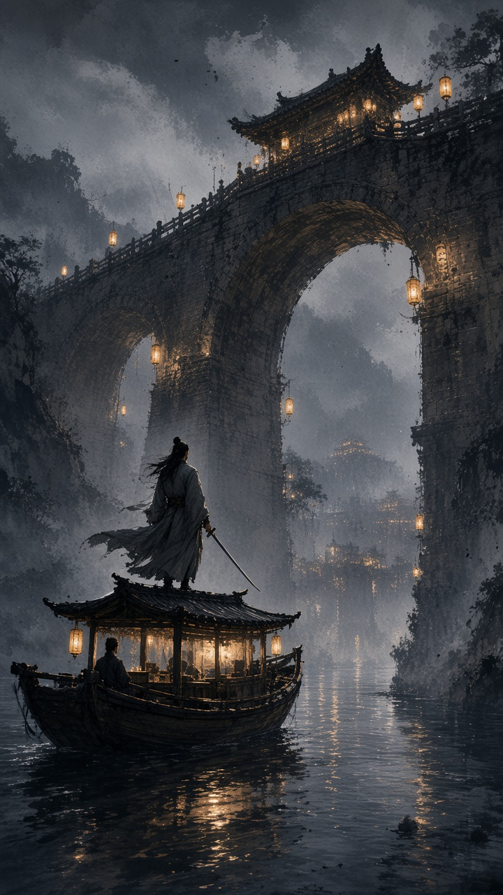

案例 01 · 仙侠不夜城
(8.5)
我的分 8.2 · Absolute-5D 8.08 · 8.6/7.6/8.2/7.4/8.6
宏大的城市与孤独人物营造出强烈的史诗感，但画面整体偏暗，细节略显模糊。
(8.7)

我的分 8.3 · Absolute-5D 7.88 · 8.4/7.8/8.0/7.2/8.4
宏大的俯瞰构图、冷暖光点与前景人物形成了强烈叙事感，但局部细节略显混杂且主体辨识度偏弱。
(8.4)

我的分 8.1 · Absolute-5D 7.89 · 8.2/8.0/7.8/7.3/8.2
氛围、尺度感和人物剪影极有张力，但远景细节略显同质化，视觉焦点还可以更凝练。
(8.6)

我的分 8.0 · Absolute-5D 7.79 · 8.0/8.3/7.6/7.2/7.6
氛围、构图和光色都很有电影感，人物与剑的视觉焦点明确，但局部建筑和材质细节略显生成式堆叠。
(8.7)

我的分 8.4 · Absolute-5D 8.26 · 8.7/8.4/8.0/7.6/8.2
氛围、光影和纵深极其统一，人物与巨桥形成很强的叙事画面，但局部纹理仍有些生成感。